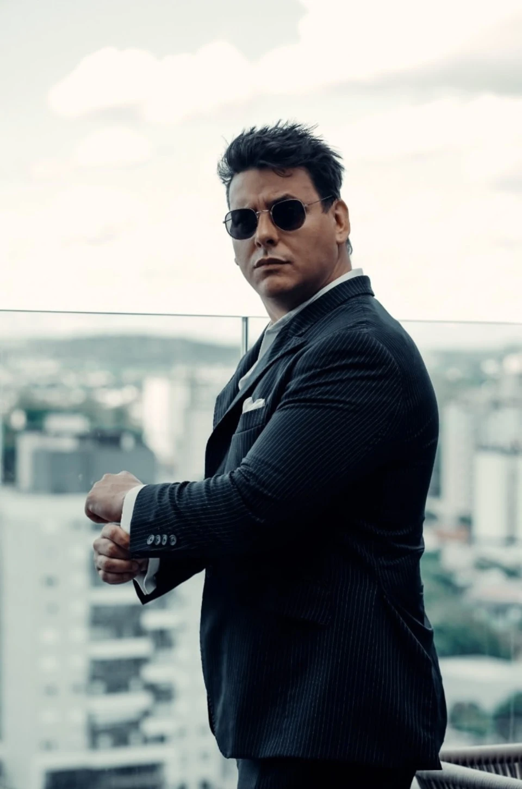
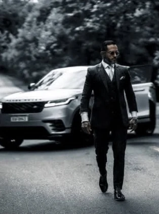
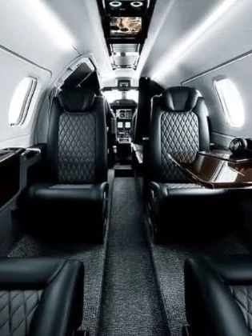
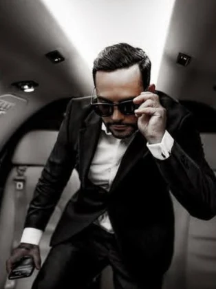
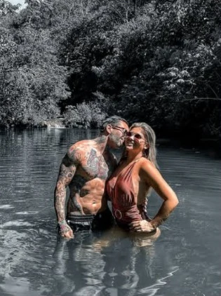
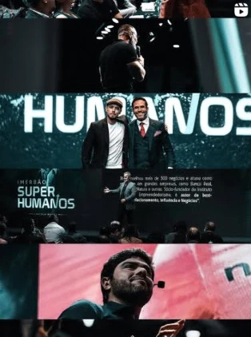
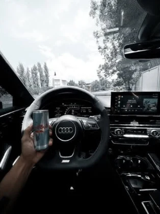

Diagnóstico
Leitura do posicionamento atual e da percepção desejada.
Transformo a rotina real de empresários em narrativas cinematográficas que constroem autoridade, despertam interesse e influenciam a maneira como o mercado os percebe.

Cada ambiente, gesto e decisão comunica algo sobre você. A fotografia cinematográfica transforma esses sinais em uma narrativa coerente de posicionamento empresarial.
em cinco dias, segundo resultado relatado pelo cliente.
Sandro Bello fotografou Lincoln Nunes em momentos de trabalho, viagens e lazer. As fotografias do perfil @lincolnn mostram como esses registros compuseram a narrativa visual do rebrand.
















Leitura do posicionamento atual e da percepção desejada.
Construção de narrativa alinhada à sua identidade e ao seu negócio.
Registro cinematográfico da sua rotina, decisões e ambientes reais.
Seleção de imagens para comunicar consistência, presença e autoridade.
Sandro Bello é fotógrafo, pesquisador e estrategista de marca pessoal. Em mais de 20 anos de fotografia, desenvolveu um olhar para os gestos e ambientes que revelam como um empresário trabalha, decide e se relaciona. É negociador de reféns, com formação em hipnose e PNL Master.
É CEO da Revista Players e da Talkers, agência de palestrantes que reúne Diógenes de Luca, Tati Diandra, Márcio Jacobelli e Theo Becker, entre outros nomes.
Na matéria de capa da revista Players, Sandro fala sobre construção de empresas, estratégia de marca e os planos para o lançamento de seu segundo livro em 2027.

Antes de uma marca ser escolhida, ela é interpretada. Antes de uma decisão ser racionalizada, a percepção já começou a construir significados.
Neste livro, Sandro Bello explora a relação entre imagem, percepção, persuasão visual e comportamento humano nos negócios. Uma reflexão sobre como sinais, narrativas e experiências influenciam a leitura que as pessoas fazem de uma marca — e por que posicionamento não se resume ao que uma empresa diz, mas ao que o público entende, sente e recorda.
Uma obra sobre a dimensão invisível das decisões: aquilo que acontece na mente antes de se transformar em escolha.
A questão é se essa percepção está trabalhando a favor do seu negócio.
Solicitar diagnóstico de imagem